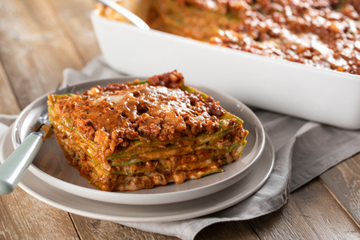

Lasagne
home

Lasagna is a classic Italian dish that consists of layers
of pasta, meat sauce, and cheese. It is baked in the oven
until the cheese is melted and bubbly. This recipe will guide
you through the steps to make a delicious lasagna that will
impress your family and friends.
- Noodles
- Tomatoes
- Beef
- Cheese
- cream
- Preheat the oven to 375°F (190°C).
- Cook the lasagna noodles according to the package instructions. Drain and set aside.
- In a large skillet, cook the ground beef over medium heat until browned. Drain any excess fat.
- Add the chopped onions and garlic to the skillet and cook until softened.
- Stir in the tomato sauce, diced tomatoes, and seasonings. Simmer for 15-20 minutes to allow the flavors to meld together.
- In a separate bowl, mix together the ricotta cheese, egg, and a pinch of salt and pepper.
- In a 9x13-inch baking dish, spread a thin layer of the meat sauce on the bottom. Place a layer of cooked lasagna noodles on top of the sauce. Spread a layer of the ricotta cheese mixture over the noodles, followed by a layer of shredded mozzarella cheese. Repeat the layers until all ingredients are used, finishing with a layer of meat sauce and a generous amount of shredded mozzarella cheese on top.
- Cover the baking dish with aluminum foil and bake in the preheated oven for 25 minutes. Remove the foil and bake for an additional 20-25 minutes, or until the cheese is melted and bubbly.
- Remove the lasagna from the oven and let it rest for 10-15 minutes before slicing and serving. This allows the layers to set and makes it easier to serve.